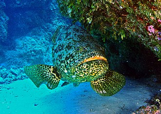

| 伊氏石斑魚 | |  |

生物介紹：
伊氏石斑魚（學名：Epinephelus itajara）是一種大型的石斑魚，為輻鰭魚綱鱸形目鱸亞目鮨科的其中一種。伊氏石斑魚主要棲息在熱帶淺水區的珊瑚及人工礁間，水深達50米；幼魚棲息在汽水河口、河道及紅樹林沼澤。伊氏石斑魚吃甲殼類、其他魚類、章魚及幼海龜。而它們是其他大型魚類如梭子魚、鯙科及鯊魚所掠食的對象。
分布：
它們的分布地包括佛羅里達礁島群、巴哈馬、加勒比海及巴西海岸。它們有時甚至在新英格蘭被捉到，但情況甚少。在東大西洋，它們出沒於剛果民主共和國至塞內加爾。
原因：
伊氏石斑魚十分美味，故大幅度被漁獵。加上它們並不怕羞，故很易被捕捉。它們傾向回到出生地大量產卵，這也使它被大量漁獵。
保育：
由於它們的數量大幅下降，故已被列為極危物種及禁止漁獵。美國及加勒比海分別於1990年及1993年禁止漁獵。自此它們的數量開始回升，但因繁殖率低，故需要很長時間才可以回復到以往的數量。